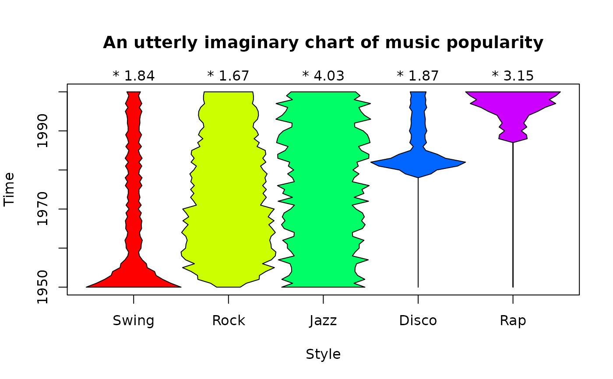
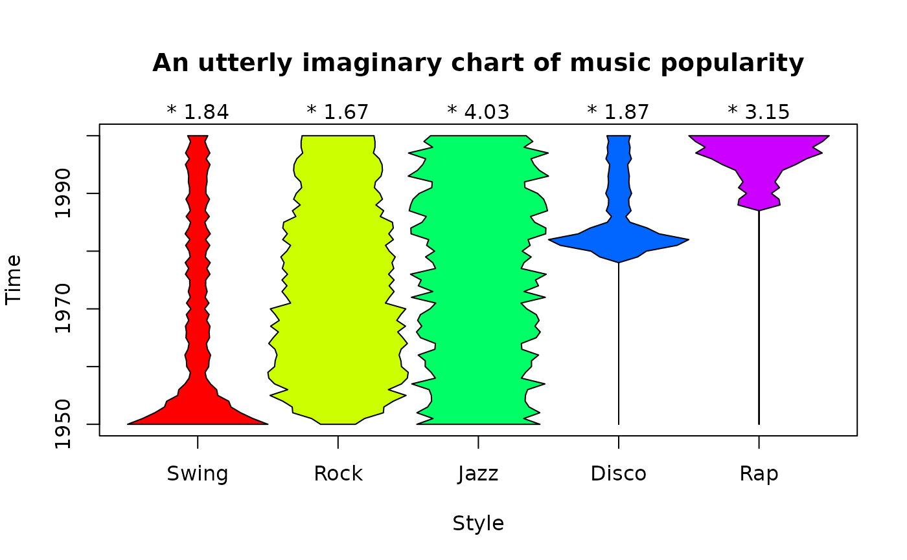

Magnitude by position chart.
kiteChart.RdDisplay numeric values as the widths of a polygon along a dimension such as time.
Arguments
- x
Numeric matrix or data frame
- xlim
Horizontal extent of the chart. Defaults to 1:dim(x)[2].
- ylim
Vertical extent of the chart. Defaults to 0.5:dim(x)[1]+0.5.
- timex
Whether the "time" axis is x (horizontal) or not.
- main,xlab,ylab
As in plot.
- border
The border color(s) for the polygons.
- col
The fill colors for the polygons.
- varpos
Optional positions for the "kite lines". Defaults to 1:dimx[1]. (see Details)
- varlabels
Labels for the rows of values - defaults to the rownames, or if these are missing, varpos[1:dim(x)[1]].
- varscale
Whether to show the maximum extent of each "kite line".
- timepos
The positions of the values along the x axis, usually times, defaulting to 1:dim(x)[2].
- timelabels
Labels for the positions, defaulting to timepos.
- mar
Plot margins. These leave space for the normalization multipliers on the right or top side (see Details).
- axlab
Where to put axis tick labels and multipliers. See Details.
- normalize
Whether to scale each row of values to a maximum width of 1.
- shownorm
Whether to display the normalization multipliers.
- ...
additional arguments passed to plot.
Details
kiteChart displays each row of x as a sequence of widths, allowing the relationships between those values and the dimension along which they occur (usually time) to be illustrated.
The values in x are scaled to a maximum polygon width of 1 if normalize is TRUE. This is to avoid overlapping of the polygons. There may be some cases where the values can be displayed directly. If normalized, the multipliers will be displayed for each row on the right or top side of the chart unless shownorm is FALSE. Remember to specify the mar argument if more space at the top is needed.
The axlab argument allows the user to place the axis tick labels and normalization multipliers on different axes. The default places the tick labels on the bottom and left sides of the plot and the multipliers on the right or top. Using axlab=c(3,4,1,2) places the tick labels on the top and right and the multipliers on the left or bottom. The mar argument may have to be adjusted.
The user can display raw values by default, or by setting varpos to TRUE. Setting varpos to a vector of positions will place the "kite lines" on those values. If there are no row names and the varlabels argument is NA, the values of varpos will be used as labels for each "kite line". The maximum extent of each "kite line" can be displayed by setting varscale to TRUE. If varscale is TRUE, one extra line will be added to the top margin. If varpos[1] is not NA, normalize is FALSE by default.
Author
Jim Lemon (Thanks to Michael Bedward for suggestions on the arguments and Nikolaus Lampadariou for the suggestions on displaying raw values)
Examples
testmat<-matrix(c(runif(50),sample(1:50,50),rnorm(50)+5,
sin(1:50)),ncol=50,byrow=TRUE)
kiteChart(testmat,varlabels=c("Uniform","Sample","Normal","Sine"),
timepos=seq(1,50,by=5),timex=FALSE)
# not enough space for the last label, add it
mtext("Sine",at=65,side=1,line=2)
 # now show it with kite line maxima
kiteChart(testmat,varlabels=c("Uniform","Sample","Normal","Sine"),
timepos=seq(1,50,by=5),timex=FALSE,varscale=TRUE)
mtext("Sine",at=65,side=1,line=2)
# now show it with kite line maxima
kiteChart(testmat,varlabels=c("Uniform","Sample","Normal","Sine"),
timepos=seq(1,50,by=5),timex=FALSE,varscale=TRUE)
mtext("Sine",at=65,side=1,line=2)
 musicmat<-matrix(c(c(0.5,0.4,0.3,0.25,0.2,0.15,0.1,rep(0.05,44))+runif(51,0,0.05),
c(0.1,0.2,0.3,0.35,0.4,0.5,0.4,rep(0.5,14),rep(0.4,15),rep(0.3,15))+runif(51,0,0.1),
rep(0.15,51)+runif(51,0,0.1),
c(rep(0,29),c(0.1,0.2,0.4,0.5,0.3,0.2,rep(0.05,16))+runif(22,0,0.05)),
c(rep(0,38),c(rep(0.05,6),0.08,0.15,0.20,0.25,0.2,0.25,0.3)+runif(13,0,0.05))),
ncol=51,byrow=TRUE)
kiteChart(musicmat,varlabels=c("Swing","Rock","Jazz","Disco","Rap"),
main="An utterly imaginary chart of music popularity",
timepos=seq(1,51,by=10),timelabels=seq(1950,2000,by=10),mar=c(5,4,4,2))
musicmat<-matrix(c(c(0.5,0.4,0.3,0.25,0.2,0.15,0.1,rep(0.05,44))+runif(51,0,0.05),
c(0.1,0.2,0.3,0.35,0.4,0.5,0.4,rep(0.5,14),rep(0.4,15),rep(0.3,15))+runif(51,0,0.1),
rep(0.15,51)+runif(51,0,0.1),
c(rep(0,29),c(0.1,0.2,0.4,0.5,0.3,0.2,rep(0.05,16))+runif(22,0,0.05)),
c(rep(0,38),c(rep(0.05,6),0.08,0.15,0.20,0.25,0.2,0.25,0.3)+runif(13,0,0.05))),
ncol=51,byrow=TRUE)
kiteChart(musicmat,varlabels=c("Swing","Rock","Jazz","Disco","Rap"),
main="An utterly imaginary chart of music popularity",
timepos=seq(1,51,by=10),timelabels=seq(1950,2000,by=10),mar=c(5,4,4,2))
 # now flip it to vertical, normalize and show the normalization factors
kiteChart(musicmat,varlabels=c("Swing","Rock","Jazz","Disco","Rap"),
main="An utterly imaginary chart of music popularity",xlab="Style",
timepos=seq(1,51,by=10),timelabels=seq(1950,2000,by=10),mar=c(5,4,4,2),
timex=FALSE,normalize=TRUE,shownorm=TRUE)

# now flip it to vertical, normalize and show the normalization factors
kiteChart(musicmat,varlabels=c("Swing","Rock","Jazz","Disco","Rap"),
main="An utterly imaginary chart of music popularity",xlab="Style",
timepos=seq(1,51,by=10),timelabels=seq(1950,2000,by=10),mar=c(5,4,4,2),
timex=FALSE,normalize=TRUE,shownorm=TRUE)
